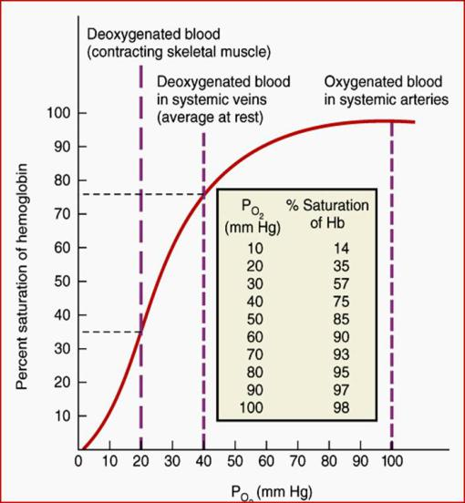

- Gas exchange at alveolar space → loading of O2 → oxygenated blood → PO2 = 100 mm Hg → O2-Hb is ~98%.
- At peripheral tissues → unloading of O2 → deoxygenated blood → PO2 = to 40 mm Hg → O2-Hb is ~ 75%.
- The physiological range of represents the flatter portion of the sigmoid Hb-O2 curve
- Only ~20-25% of O2 from Hb-O2 is unloaded
- How about the steep portion of the curve?
- What happens to unloading of O2 when PO2 ↓ ↓?
